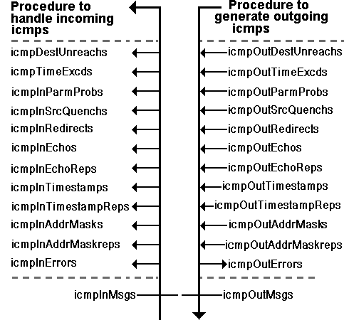

The Internet Control Message Protocol (icmp) Group (1.3.6.1.2.1.5)
ICMP Statistics for Incoming and Outgoing Traffic
The
Internet Control Message Protocol (ICMP)
is an essential component of
IP
.
When IP runs into a problem delivering a
datagram
, an ICMP message is sent back
to the source. There also are some very useful ICMP service messages - the echo
message in particular, which is the basis of the ping function used to check
whether systems are active and to test response time.
The ICMP
MIB subtree
is made up of a list of statistical traffic counts and one
configuration parameter.
All the variables in this MIB subtree are counters, so it is important to keep
in mind that counters will continually be incremented until they wrap around.
Hence, only differences in value across a sample interval have significance.
The most interesting numbers from the network management point of view are the
counts of Source Quenches, Time-to-Live Expired, and Destination Unreachables.
A large count during an interval can signal routing problems or congestion at
the
node
being polled. Then, the ICMP echo message enables you to perform quick
checks of connectivity.
The total number of incoming messages is counted by the icmpInMsgs variable.
Some of the incoming messages are discarded because the have bad checksums or
bad type fields. The others are split into the various messages types, and
these are handled by an ICMP procedure.
The total number of outgoing messages is counted by the icmpOutMsgs variable.
This flow is the sum of the different type of messages generated by the ICMP
procedure minus those which were discarded before a send can be attempted
(because of a shortage of buffer memory).

Case Diagram
For ICMP data flow.